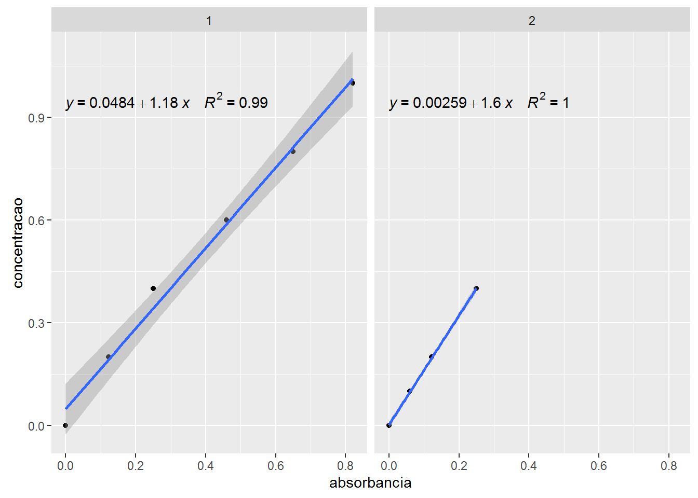

library(pacman)
p_load(readr, dplyr, ggplot2, ggpmisc, broom, purrr, tidyr)padrao <- read_csv2("./dados/absorbancia_padrao.csv")
padrao## # A tibble: 10 x 3
## grupo concentracao absorbancia
## <int> <dbl> <dbl>
## 1 1 0.0 0.000
## 2 1 0.2 0.122
## 3 1 0.4 0.250
## 4 1 0.6 0.460
## 5 1 0.8 0.650
## 6 1 1.0 0.820
## 7 2 0.0 0.000
## 8 2 0.1 0.060
## 9 2 0.2 0.122
## 10 2 0.4 0.250leitura <- read_csv2("./dados/absorbancia_leitura.csv")
leitura## # A tibble: 45 x 4
## grupo amotra repeticao absorbancia
## <int> <chr> <int> <dbl>
## 1 1 A1 1 0.545
## 2 1 A1 2 0.500
## 3 1 A1 3 0.545
## 4 1 A2 4 0.589
## 5 1 A2 5 0.600
## 6 1 A2 6 0.580
## 7 1 A3 7 0.520
## 8 1 A3 8 0.532
## 9 1 A3 9 0.587
## 10 1 B1 1 0.780
## # ... with 35 more rowsggplot(padrao, aes(absorbancia, concentracao)) +
geom_point() +
geom_smooth(method = "lm") +
stat_poly_eq(aes(label = paste(..eq.label.., ..rr.label.., sep = "~~~~")), formula = y ~ x, parse = TRUE) +
facet_wrap(~grupo)
grupo1 <- lm(concentracao ~ absorbancia, data = filter(padrao, grupo == 1))glance(grupo1)## r.squared adj.r.squared sigma statistic p.value df logLik
## 1 0.991195 0.9889937 0.03925405 450.2856 2.915898e-05 2 12.12897
## AIC BIC deviance df.residual
## 1 -18.25793 -18.88266 0.006163523 4tidy(grupo1)## term estimate std.error statistic p.value
## 1 (Intercept) 0.04835099 0.02664263 1.814797 1.437434e-01
## 2 absorbancia 1.17719117 0.05547572 21.219935 2.915898e-05grupo2 <- lm(concentracao ~ absorbancia, data = filter(padrao, grupo == 2))glance(grupo2)## r.squared adj.r.squared sigma statistic p.value df logLik
## 1 0.9997803 0.9996704 0.003100507 9100.121 0.0001098705 2 18.8153
## AIC BIC deviance df.residual
## 1 -31.6306 -33.47171 1.922629e-05 2tidy(grupo2)## term estimate std.error statistic p.value
## 1 (Intercept) 0.002592636 0.002381102 1.088838 0.3899437074
## 2 absorbancia 1.596364484 0.016734335 95.394555 0.0001098705grupos <- padrao %>%
group_by(grupo) %>%
do(ajuste = lm(concentracao ~ absorbancia, data = .))
grupos## Source: local data frame [2 x 2]
## Groups: <by row>
##
## # A tibble: 2 x 2
## grupo ajuste
## * <int> <list>
## 1 1 <S3: lm>
## 2 2 <S3: lm>grupos %>% glance(ajuste)## Source: local data frame [2 x 12]
## Groups: grupo [2]
##
## grupo r.squared adj.r.squared sigma statistic p.value df
## <int> <dbl> <dbl> <dbl> <dbl> <dbl> <int>
## 1 1 0.9911950 0.9889937 0.039254055 450.2856 2.915898e-05 2
## 2 2 0.9997803 0.9996704 0.003100507 9100.1212 1.098705e-04 2
## # ... with 5 more variables: logLik <dbl>, AIC <dbl>, BIC <dbl>,
## # deviance <dbl>, df.residual <int>grupos %>% tidy(ajuste)## Source: local data frame [4 x 6]
## Groups: grupo [2]
##
## grupo term estimate std.error statistic p.value
## <int> <chr> <dbl> <dbl> <dbl> <dbl>
## 1 1 (Intercept) 0.048350987 0.026642635 1.814797 1.437434e-01
## 2 1 absorbancia 1.177191172 0.055475721 21.219935 2.915898e-05
## 3 2 (Intercept) 0.002592636 0.002381102 1.088838 3.899437e-01
## 4 2 absorbancia 1.596364484 0.016734335 95.394555 1.098705e-04grupos %>% augment(ajuste, newdata = leitura)## Source: local data frame [90 x 6]
## Groups: grupo [2]
##
## grupo amotra repeticao absorbancia .fitted .se.fit
## <int> <chr> <int> <dbl> <dbl> <dbl>
## 1 1 A1 1 0.545 0.6899202 0.01835531
## 2 1 A1 2 0.500 0.6369466 0.01727609
## 3 1 A1 3 0.545 0.6899202 0.01835531
## 4 1 A2 4 0.589 0.7417166 0.01966135
## 5 1 A2 5 0.600 0.7546657 0.02002107
## 6 1 A2 6 0.580 0.7311219 0.01937636
## 7 1 A3 7 0.520 0.6604904 0.01772048
## 8 1 A3 8 0.532 0.6746167 0.01801467
## 9 1 A3 9 0.587 0.7393622 0.01959728
## 10 1 B1 1 0.780 0.9665601 0.02720728
## # ... with 80 more rows